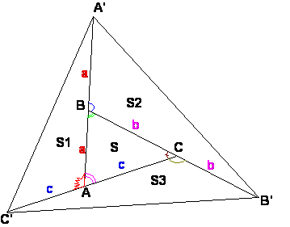

Para el aula
Problema 307
2.- Alrededor de un triángulo.
Sea ABC un triángulo.
1º) Construye el punto A' simétrico de A en relación a B; el punto B' simétrico de B en relación a C, y el punto C' simétrico de C en relación a A.
2º) Compara las áreas de los triángulos ABC y A'B'C'
Clapponi, P. (1995): Activité .. autour d'un triangle. Petit X 40, pag. 86. [Clapponi es un seudónimo de Philippe Clarou - Bernard Capponi].
Solución de William Rodríguez Chamache. profesor de geometria de la "Academia integral class" Trujillo- Perú

Por propiedad sabemos que se cumple: